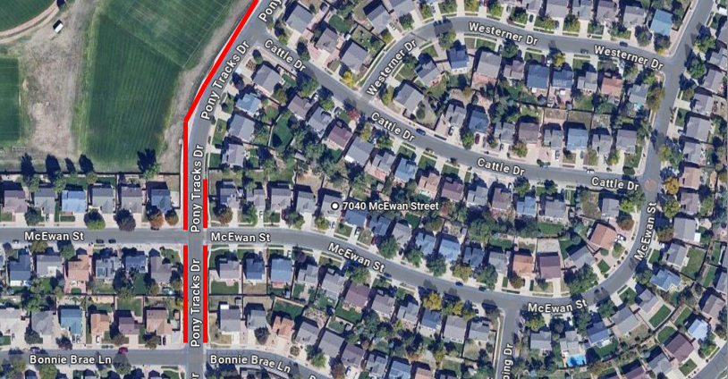

All out-of-state guests are strongly advised to consume a minimum of 128 ounces of water within the initial 24 hours of their arrival. Following this, it is recommended to drink 96 ounces of water daily. To aid in hydration, we suggest using hydration packets, which can be mixed with water to assist your body in retaining moisture.
Please note that the ceremony will take place en route to Pikes Peak, situated at an altitude of 9,960 feet. It is important to be aware that altitude sickness may occur if these hydration guidelines are not followed.
For your convenience, local stores such as Walmart offer oxygen bottles for approximately $10. These can be beneficial in alleviating symptoms of altitude sickness, particularly for our elderly guests.
Location: Halfway Picnic Area, Pikes Peak
Day: August 9th, 2024
Time: 1:00-2:00 PM
Arrival Instructions: Kindly arrive at the Halfway Picnic Area no later than 12:30 PM. Upon arrival, please follow the signage directing you to drive onto the dirt road. Avoid parking at the entrance; additional parking spots will be available closer to the ceremony site.
Attire: Formal attire, such as collared shirts and dresses, is recommended.
Potential Weather: In the event of rain, we advise guests to bring umbrellas. Please note that in the case of inclement weather, there may be adjustments to the scheduled time. Guests will be notified a few days prior in the event of a potential delay. For those bringing umbrellas, we kindly request clear umbrellas to ensure uniformity in group photos. Clear umbrellas can be found on Amazon.
Post Ceremony: Following the ceremony, from 2:00-3:30 PM, guests are welcome to explore the scenic beauty of Pikes Peak.
Notes: Admission to Pikes Peak will be prepaid. Upon arrival to the entrace, go to any both, and let the employees know you are attending Jake and Yordie's wedding and proceed to halfway picnic area. Upon arrival to halfway picnic area, follow the green arrows on the dirt road until you recieve parking directions.
Location: 7040 Mcewan Street, Colorado Springs, CO
Day: August 9th, 2024
Reception Itinerary
Cocktail Hour Start - 4:30pm
Dinner - 5:30pm
Cake Cutting & Speeches - 6:30pm
Party Time - 7:00pm
End of Party - 10:00pm
Parking Instructions: Please park on Pony Tracks Drive and indicated by red on the map below and walk to the reception side.
What to wear: Formal Wear
Potential Weather: There will be a tent in the chance of rain.
Notes: Please email jyanderson7040@gmail.com if you have food allergies/preferences.

Location: 7040 Mcewan Street, Colorado Springs, CO
Day: August 10th, 2024
Time: 11:00am-3:00pm
Details: Join us for homemade brunch and mimosas made by the Andersons. Yard games and other activites will be available.
What to wear: Causal, whatever you want
Parking: Same as before